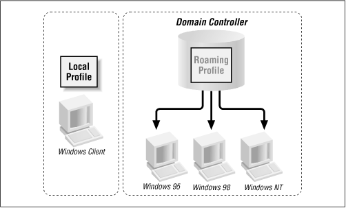

Using Samba
Robert Eckstein, David Collier-Brown, Peter Kelly1st Edition November 1999
1-56592-449-5, Order Number: 4495
416 pages, $34.95
|
|
Using SambaRobert Eckstein, David Collier-Brown, Peter Kelly1st Edition November 1999 1-56592-449-5, Order Number: 4495 416 pages, $34.95 |
6.6 Logon Scripts
Samba supports the execution of Windows logon scripts, which are scripts (.BAT or .CMD) that are executed on the client when a user logs on to a Windows domain. Note that these scripts are stored on the Unix side, but are transported across the network to the client side and executed once a user logs on. These scripts are invaluable for dynamically setting up network configurations for users when they log on. The downside is that because they run on Windows, they must use the Windows network configuration commands.
If you would like more information on NET commands, we recommend the following O'Reilly handbooks: Windows NT in a Nutshell, Windows 95 in a Nutshell, and Windows 98 in a Nutshell.
You can instruct Samba to use a logon script with the
logonscriptoption, as follows:[global] domain logons = yes security = user workgroup = SIMPLE os level = 34 local master = yes preferred master = yes domain master = yes logon script = %U.bat [netlogon] comment = The domain logon service path = /export/samba/logon public = no writeable = no browsable = noNote that this example uses the
%Uvariable, which will individualize the script based on the user that is logging in. It is common to customize logon scripts based on the user or machine name that is logging onto the domain. These scripts can then be used to configure individual settings for users or clients.Each logon script should be stored at the base of the
[netlogon]share. For example, if the base of the[netlogon]share is /export/samba/logon and the logon script is jeff.bat, the file should be located at /export/samba/logon/jeff.bat. When a user logs on to a domain that contains a startup script, he or she will see a small dialog that informs them that the script is executing, as well as any output the script generates in an MS-DOS-like box.One warning: because these scripts are loaded by Windows and executed on the Windows side, they must consist of DOS formatted carriage-return/linefeed characters instead of Unix carriage returns. It's best to use a DOS- or Windows-based editor to create them.
Here is an example of a logon script that sets the current time to match that of the Samba server and maps two network drives,
handi, to individual shares on the server:# Reset the current time to that shown by the server. # We must have the "time server = yes" option in the # smb.conf for this to work. echo Setting Current Time... net time \\hydra /set /yes # Here we map network drives to shares on the Samba # server echo Mapping Network Drives to Samba Server Hydra... net use h: \\hydra\data net use i: \\hydra\network6.6.1 Roaming profiles
In Windows 95 and NT, each user can have his or her own profile. A profile bundles information such as: the appearance of a user's desktop, the applications that appear on the start menus, the background, and other miscellaneous items. If the profile is stored on a local disk, it's called a local profile, since it describes what a user's environment is like on one machine. If the profile is stored on a server, on the other hand, the user can download the same profile to any client machine that is connected to the server. The latter is called a roaming profile because the user can roam around from machine to machine and still use the same profile. This makes it particularly convenient when someone might be logging in from his or her desk one day and from a portable in the field the next. Figure 6.6 illustrates local and roaming profiles.
Figure 6.6: Local profiles versus roaming profiles

Samba will provide roaming profiles if it is configured for domain logons and you set
logon pathto the user's home directory andlogon hometo a subdirectory of the user's home directory used to store profiles. These options are typically used with one of the user variables, as shown in this example:[global] domain logons = yes security = user workgroup = SIMPLE os level = 34 local master = yes preferred master = yes domain master = yes logon home = \\%N\%U logon path = \\%N\%U\profileSamba versions previous to 2.0.6 allowed Win9X machines to store profiles in separate shares, but that prevented the clients from setting their
Once a user initially logs on, the Windows client will create a user.dat or ntuser.dat file - depending on which operating system the client is running. The client then uploads the contents of the desktop, the Start Menu, the Network Neighborhood, and the programs folders in individual folders in the directory. When the user subsequently logs on, those contents will be downloaded from the server and activated for the client machine with which the user is logging on. When he or she logs off, those contents will be uploaded back on the server until the next time the user connects. If you look at the directory listing of a profile folder, you'll see the following:logon pathso they could get their home directory mounted by saying "net use /home". This was corrected in 2.0.6.# ls -al total 321 drwxrwxr-x 9 root simple Jul 21 20:44 . drwxrwxr-x 4 root simple Jul 22 14:32 .. drwxrwx--- 3 fred develope Jul 12 07:15 Application Data drwxrwx--- 3 fred develope Jul 12 07:15 Start Menu drwxrwx--- 2 fred develope Jul 12 07:15 cookies drwxrwx--- 2 fred develope Jul 12 07:15 desktop drwxrwx--- 7 fred develope Jul 12 07:15 history drwxrwx--- 2 fred develope Jul 12 07:15 nethood drwxrwx--- 2 fred develope Jul 19 21:05 recent -rw------- 1 fred develope Jul 21 21:59 user.datThe user.dat files are binary configuration files, created automatically by Windows. They can be edited with the Profile Editor on a Windows client, but they can be somewhat tricky to get correct. Samba supports them correctly for all clients up to NT 5.0 beta, but they're still relatively new.
Hints and HOWTOs for handling logon scripts are available in the Samba documentation tree, in both docs/textdocs/DOMAIN.txt and docs/textdocs/PROFILES.txt.
6.6.2 Mandatory profiles
Users can also have mandatory profiles, which are roaming profiles that they cannot change. For example, with a mandatory profile, if a user adds a command to the Start Menu on Tuesday, it will be gone when he or she logs in again on Wednesday. The mandatory profile is simply a user.dat file that has been renamed to user.man and made read-only on the Unix server. It normally contains settings that the administrator wishes to ensure the user always executes. For example, if an administrator wants to create a fixed user configuration, he or she can do the following:
Set the
logonpathoption in the smb.conf file to point to this directory.Logon as the user from Windows 95/98 to have the client populate the directory.
Mandatory profiles are fairly unusual. Roaming profiles, on the other hand, are one of the more desirable features of Windows that Samba can support.
6.6.3 Logon Script Options
Table 6.10 summarizes the options commonly used in association with Windows domain logon scripts.
Table 6.10: Logon Script Options Option
Parameters
Function
Default
Scope
logon scriptstring (DOS path)
Name of DOS/NT batch file
None
Global
logon pathstring (UNC server and share name)
Location of roaming profile for user
\\%N\%U\profileGlobal
logon drivestring (drive letter)
Specifies the logon drive for a home directory (NT only)
Z:Global
logon homestring (UNC server and share name)
Specifies a location for home directories for clients logging on to the domain
\\%N\%UGlobal
6.6.3.1 logon script
This option specifies a Windows .BAT or .CMD file with lines ending in carriage-return/line feed that will be executed on the client after a user has logged on to the domain. Each logon script should be stored at the base of a share entitled
[netlogin](see the section Section 6.5.1 for details.) This option frequently uses the%Uor%mvariables (user or NetBIOS name) to point to an individual script. For example:logon script = %U.batwill execute a script based on the username located at the base of the
[netlogin]share. If the user who is connecting isfredand the path of the[netlogin]share maps to the directory /export/samba/netlogin, the script should be /export/samba/netlogin/fred.bat. Because these scripts are downloaded to the client and executed on the Windows side, they must consist of DOS formatted carriage-return/linefeed characters instead of Unix carriage returns.6.6.3.2 logon path
This option provides a location for roaming profiles. When the user logs on, a roaming profile will be downloaded from the server to the client and activated for the user who is logging on. When the user logs off, those contents will be uploaded back on the server until the next time the user connects.
It is often more secure to create a separate share exclusively for storing user profiles:
logon path = \\hydra\profile\%UFor more informaiton on this option, see the section Section 6.6, Logon Scripts, earlier in this chapter.
6.6.3.3 logon drive
This option specifies the drive letter on an NT client to which the home directory specified with the
logonhomeoption will be mapped. Note that this option will work with Windows NT clients only. For example:logon home = I:You should always use drive letters that will not conflict with fixed drives on the client machine. The default is Z:, which is a good choice because it is as far away from A:, C:, and D: as possible.
6.6.3.4 logon home
This option specifies the location of a user's home directory for use by the DOS NET commands. For example, to specify a home directory as a share on a Samba server, use the following:
logon home = \\hydra\%UNote that this works nicely with the
[homes]service, although you can specify any directory you wish. Home directories can be mapped with a logon script using the following command:NET USE I: /HOMEIn addition, you can use the User Environment Profile under User Properties in the Windows NT User Manager to verify that the home directory has automatically been set.
6.6.4 Other Connection Scripts
After a user successfully makes a connection to any Samba share, you may want the Samba server to execute a program on its side to prepare the share for use. Samba allows scripts to be executed before and after someone connects to a share. You do not need to be using Windows domains to take advantage of the options. Table 6.11 introduces some of the configuration options provided for setting up users.
Table 6.11: Connection Script Options Option
Parameters
Function
Default
Scope
root preexecstring (Unix command)
Sets a command to run as
root, before connecting to the share.None
Share
preexec (exec)string (Unix command)
Sets a Unix command to run as the user before connecting to the share.
None
Share
postexecstring (Unix command)
Sets a Unix command to run as the user after disconnecting from the share.
None
Share
root postexecstring (Unix command)
Sets a Unix command to run as
rootafter disconnecting from the share.None
Share
6.6.4.1 root preexec
The first form of the logon command is called
rootpreexec. This option specifies a Unix command as its value that will be run as the root user before any connection to a share is completed. You should use this option specifically for performing actions that require root privilege. For example,rootpreexeccan be used to mount CD-ROMs for a share that makes them available to the clients, or to create necessary directories. If norootpreexecoption is specified, there is no default action. Here is an example of how you can use the command to mount a CD-ROM:[homes] browseable = no writeable = yes root preexec = /etc/mount /dev/cdrom2Remember that these commands will be run as the root user. Therefore, in order to ensure security, users should never be able to modify the target of the
rootpreexeccommand.6.6.4.2 preexec
The next option run before logon is the
preexecoption, sometimes just calledexec. This is an ordinary unprivileged command run by Samba as the user specified by the variable%u. For example, a common use of this option is to perform logging, such as the following:[homes]preexec = echo "%u connected to %S from %m (%I)\" >>/tmp/.logBe warned that any information the command sends to standard output will not be seen by the user, but is instead thrown away. If you intend to use a
preexecscript, you should ensure that it will run correctly before having Samba invoke it.6.6.4.3 postexec
Once the user disconnects from the share, the command specified with
postexecis run as the user on the Samba server to do any necessary cleanup. This option is essentially the same as thepreexecoption. Again, remember that the command is run as the user represented by%uand any information sent to standard output will be ignored.6.6.4.4 root postexec
Following the
postexecoption, therootpostexeccommand is run, if one has been specified. Again, this option specifies a Unix command as its value that will be run as the root user before disconnecting from a share. You should use this option specifically for performing actions that require root privilege.6.6.5 Working with NIS and NFS
Finally, Samba has the ability to work with NIS and NIS+. If there is more than one file server, and each runs Samba, it may be desirable to have the SMB client connect to the server whose disks actually house the user's home directory. It isn't normally a good idea to ship files across the network once via NFS to a Samba server, only to be sent across the network once again to the client via SMB. (For one thing, it's slow - about 30 percent of normal Samba speed). Therefore, there are a pair of options to tell Samba that NIS knows the name of the right server and indicate in which NIS map the information lives.
Table 6.12 introduces some of the other configuration options specifically for setting up users.
Table 6.12: NIS Options Option
Parameters
Function
Default
Scope
nis homedirboolean
If
yes, use NIS instead of /etc/passwd to look up the path of a user's home directory
noGlobal
homedir mapstring (NIS map name)
Sets the NIS map to use to look up a user's home directory
None
Global
6.6.5.1 nis homedir and homedir map
The
nishomedirandhomedirmapoptions are for Samba servers on network sites where Unix home directories are provided using NFS, the automounter, and NIS (Yellow Pages).The
nishomediroption indicates that the home directory server for the user needs to be looked up in NIS. Thehomedirmapoption tells Samba what NIS map to look in for the server that has the user's home directory. The server needs to be a Samba server, so the client can do an SMB connect to it, and the other Samba servers need to have NIS installed so they can do the lookup.For example, if user
joeasks for a share called[joe], and thenishomediroption is set toyes, Samba will look in the file specified byhomedirmapfor a home directory forjoe. If it finds one, Samba will return the associated machine name to the client. The client will then try to connect to that machine and get the share from there. Enabling NIS lookups looks like the following:[globals] nis homedir = yes homedir map = amd.map
 |
 |
 |
| 6.5 Windows Domains |
 | 7. Printing and Name Resolution |
© 1999, O'Reilly & Associates, Inc.